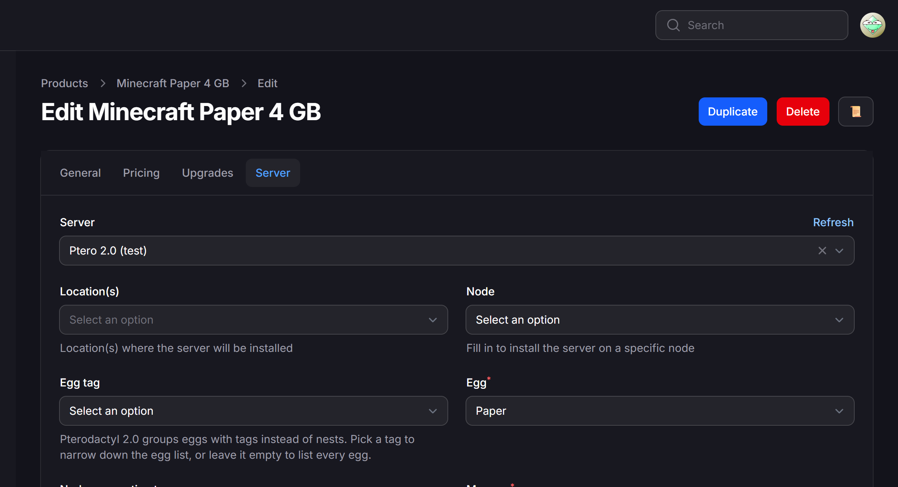
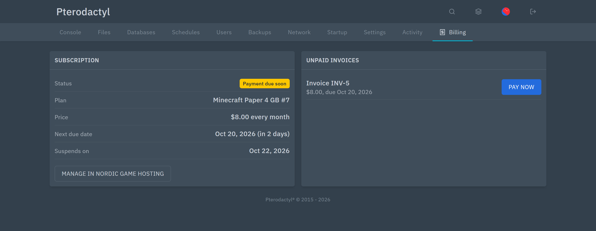

Pterodactyl 2.0 for Paymenter
A drop-in Paymenter server extension that works with Pterodactyl 2.0 and Pterodactyl 1.x. Install it before or after you upgrade the panel; nothing changes for your customers.
The error this fixes
Pterodactyl 2.0 removed the Application API's nest endpoints. Paymenter's built-in Pterodactyl extension still calls them, so after the panel upgrade new orders, upgrades and the product page fail with:
The route api/application/nests/1/eggs/1 could not be found.The same message appears as The route api/application/nests could not be found on the product page. Pterodactyl's own upgrade guide tells you to update your billing module before upgrading. For Paymenter, this is that update.
What it does
- Pterodactyl 1.x and 2.0 from the same settings; the version is detected automatically.
- Your products keep working. Same server settings and product options as the built-in extension. Egg IDs do not change in the 2.0 upgrade.
- Eggs by tag on 2.0, preselected from the nest a 1.x product used.
- Node reservation tags for automatic deployment on 2.0.
- Locations, fixed nodes, port arrays, port ranges, dedicated IPs, upgrades, suspend and terminate as before, with clearer error messages.

Install
- Copy the
Pterodactyl2folder toextensions/Servers/in Paymenter. - Switch your existing Pterodactyl servers with one command (settings, products and services stay):
php artisan tinker --execute="App\Models\Server::where('extension','Pterodactyl')->update(['extension'=>'Pterodactyl2']);"Docker: prefix the command with docker compose exec paymenter. To go back, swap the two names.
Upgrading Pterodactyl to 2.0, in order
| Step | Where |
|---|---|
| 1. Install this extension and switch your servers | Paymenter, while the panel is still on 1.x |
| 2. Upgrade the panel with the official guide | docs.pterodactyl.io |
| 3. Test Connection on the server | Paymenter → Admin → Servers |
| 4. Open one product and check the egg | Paymenter → Admin → Products → Server |
Want one-click sign-in and billing inside the panel?
Karelia Bridge is the optional add-on for Paymenter and Pterodactyl 2.0. Customers click Open control panel in Paymenter and land on their server, signed in. Every server gets a Billing page with the next due date and unpaid invoices, and a banner above the console before payment is due.

FAQ
Do I have to set up my products again?
No. One command switches your servers; products and services stay as they are.
Does it still work with Pterodactyl 1.x?
Yes. It uses nests on 1.x and eggs and tags on 2.0.
Which API key permissions does it need?
Read and write on servers, users, nodes, locations, allocations and eggs, like the built-in extension. Read access to tags on 2.0 adds the tag filter.
Is it affiliated with Paymenter or Pterodactyl?
No. It is an independent extension; the names describe compatibility.